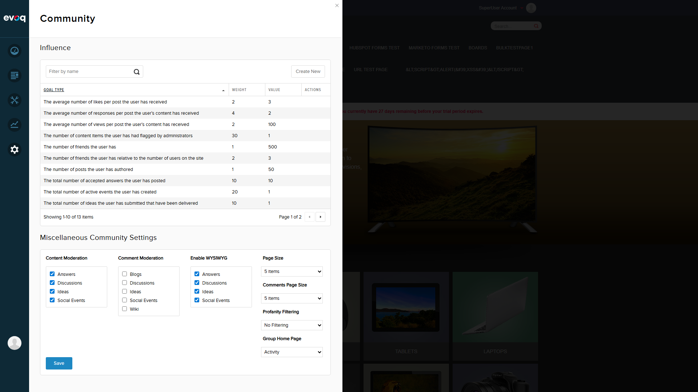
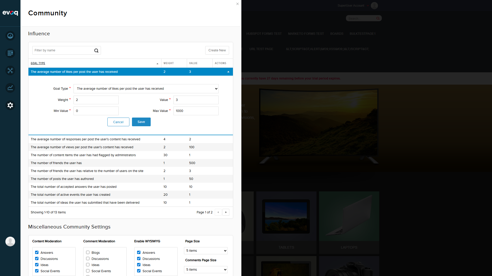
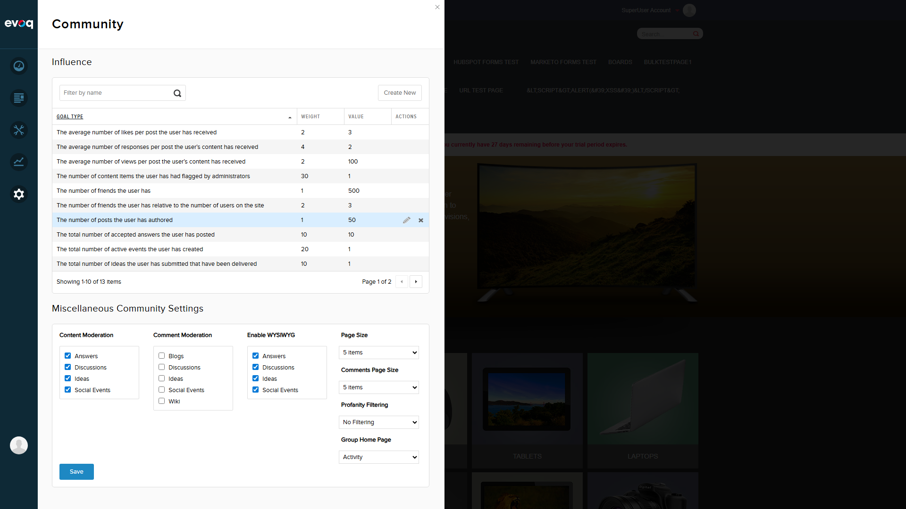
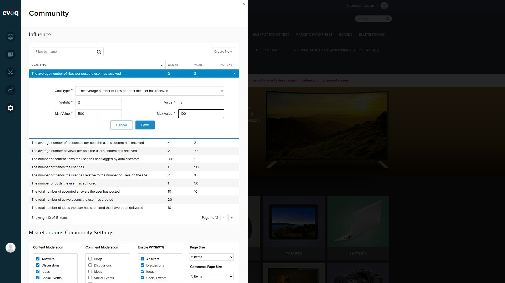
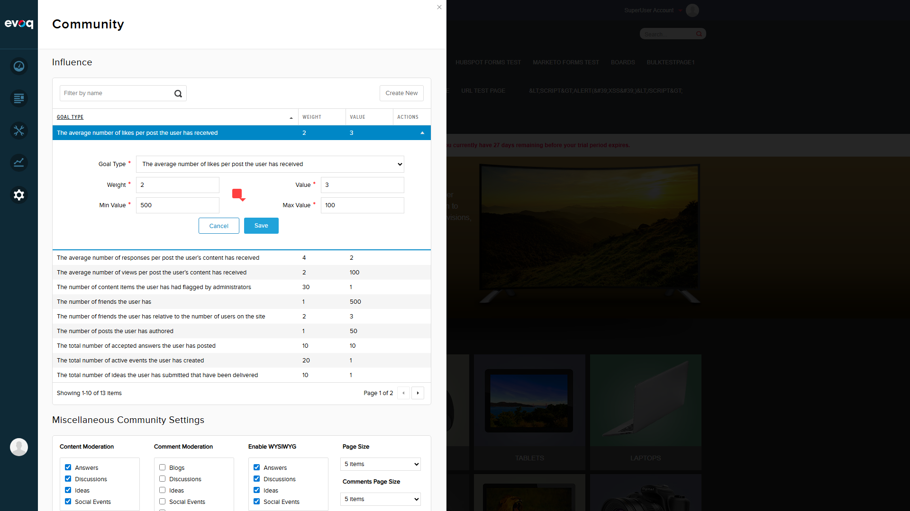
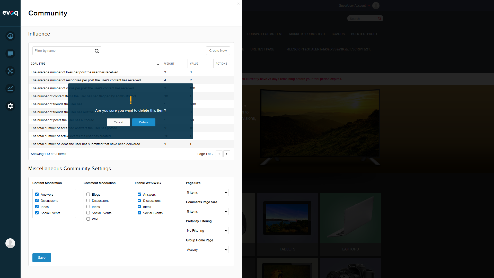
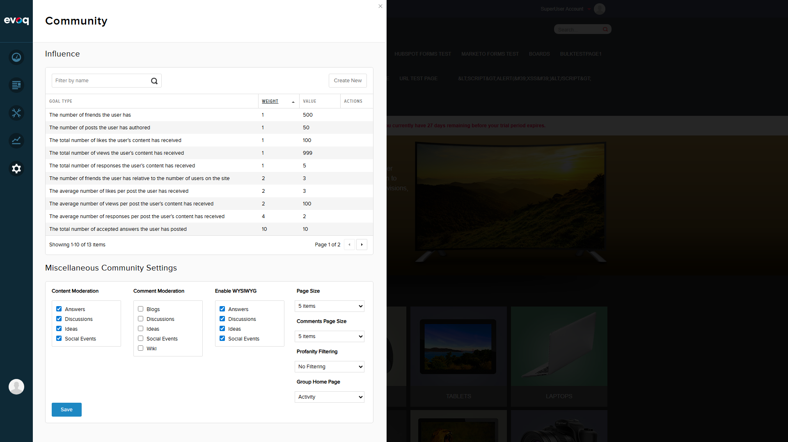

Test Report: UI Behavior and User Experience
Test Summary
Extension: Evoq.PersonaBar.CommunitySettings (PersonaBar Module)
Feature: UI Behavior and User Experience
Feature Priority: Medium
Test Date: December 30, 2025
Overall Result: PASS
Feature Description
Test interactive UI elements including inline editing, animations, and real-time validation in the Community Settings panel.
Test Environment
| Property |
Value |
| Website URL |
http://localhost:8081 |
| Browser |
Playwright (Chromium) |
| Screen Resolution |
1920x1080 (Full HD) |
| User Account |
SuperUser (host) |
| UI Location |
Admin > Settings > Community Settings |
Test Scenarios & Results
Scenario 1: Initial Page State PASS
Objective: Verify the Community Settings page loads correctly with all expected elements.
- Navigate to Admin > Settings > Community Settings
- Verify the Influence section displays with the table
- Verify the Miscellaneous Community Settings section is visible
Observations:
- Page loads successfully with "Community" header
- Influence table shows 13 items (paginated, 10 per page)
- Settings section displays checkboxes and dropdowns for moderation, WYSIWYG, page sizes, and filtering

Scenario 2: Row Click to Expand Inline Edit Form PASS
Objective: Verify clicking a row expands the inline edit form with slide animation.
- Click on a row in the Influence table
- Observe the slide-down animation (400ms)
- Verify the edit form displays with all fields
Observations:
- Row click triggers smooth slide-down animation
- Edit form shows: Goal Type dropdown, Weight, Value, Min Value, Max Value fields
- Cancel and Save buttons are displayed
- Selected row is highlighted in blue

Scenario 3: Slide Up Animation on Cancel PASS
Objective: Verify the edit form collapses with slide-up animation when Cancel is clicked.
- With edit form open, click Cancel button
- Observe the slide-up animation (200ms)
- Verify the form is hidden
Observations:
- Cancel triggers smooth slide-up animation
- Form collapses completely
- Row selection is removed

Scenario 4: Real-time Validation Feedback PASS
Objective: Verify validation errors are displayed when invalid values are entered.
- Open inline edit form
- Set Min Value = 500 and Max Value = 100 (invalid: min > max)
- Click Save button
- Observe validation error indicator
Observations:
- Validation triggers on Save attempt
- Red error indicator appears next to the invalid field
- Save is blocked until validation passes
- Custom validators work: minlessthanmax, betweenminmax


Scenario 5: Toast Notifications for Success PASS
Objective: Verify toast notifications appear after successful operations.
- Fix validation errors (set valid Min/Max values)
- Click Save button
- Observe toast notification
Observations:
- Save button text changes to "Saving..." during operation (confirmed in code)
- Success toast appears: "Item successfully saved."
- Toast includes success icon
- Form closes automatically after successful save
Scenario 6: Confirmation Dialog for Delete Operations PASS
Objective: Verify confirmation dialog appears before deleting items.
- Hover over a row to reveal action buttons
- Click the Remove/Delete button
- Observe confirmation dialog
Observations:
- Confirmation dialog appears with warning icon
- Message: "Are you sure you want to delete this item?"
- Cancel and Delete buttons available
- Cancel dismisses dialog without action

Scenario 7: Column Sorting in Influence Table PASS
Objective: Verify clicking column headers sorts the table data.
- Click on the "Weight" column header
- Observe sort indicator and data reordering
Observations:
- Clicking column header triggers sorting
- Data sorted in ascending order (1, 1, 1, 1, 1, 2, 2, 2, 4, 10)
- Sort indicator appears on column header
- Clicking again would toggle to descending order

Scenario 8: Responsive Layout on Different Screen Sizes PASS
Objective: Verify the UI adapts to different screen sizes.
- Resize browser to tablet size (768x1024)
- Observe layout adaptations
Observations:
- PersonaBar collapses to icon-only mode
- Content area adapts to narrower width
- Table columns remain visible but some may be truncated
- Settings section remains functional

Summary of Findings
| Test Scenario |
Status |
Notes |
| Row Click to Expand Inline Edit |
PASS |
Slide-down animation works smoothly (400ms) |
| Slide Up/Down Animations |
PASS |
Both expand (400ms) and collapse (200ms) animations functional |
| Save Button "Saving..." Text |
PASS |
Button text changes during save operation (confirmed in code) |
| Real-time Validation Feedback |
PASS |
Validation errors display next to invalid fields |
| Error Message Display |
PASS |
Red error indicators appear for validation failures |
| Delete Confirmation Dialog |
PASS |
Warning dialog with Cancel/Delete options |
| Toast Notifications |
PASS |
Success/error notifications display correctly |
| Column Sorting |
PASS |
Sortable columns with visual indicators |
| Responsive Layout |
PASS |
UI adapts to smaller screen sizes |
Code Review Notes:
The implementation uses Knockout.js for data binding and jQuery for animations. Key UI behaviors confirmed in code:
slideDown(400, 'linear') for expanding edit formsslideUp(200, 'linear') for collapsing edit formsbtn.html(utility.resx.CommunitySettings.btn_Saving) for button text changeutility.confirm() for delete confirmation dialogsutility.notify() and utility.notifyError() for toast notifications- Custom validators:
minlessthanmax, betweenminmax
Conclusion
All UI behavior and user experience tests PASSED. The Community Settings feature provides a well-designed interface with smooth animations, proper validation feedback, confirmation dialogs for destructive actions, and responsive layout support. The implementation follows good UX practices for an administrative interface.